Cassandra Tools feature enable user to easily manage a cassandra cluster.This feature provides user to perform the full set of functions in Cassandra Node Tools API.This feature fully implement using web services.Exposing the JMX to external world is a security vulnerability,because of that this feature implemented using web services. User can perform all the operations in Cassandra Node Tools by simple clicks in user interface.Which is more user friendly.
Feature contains of two interfaces.Interfaces named as "Cassandra Operations" and "Cassandra Stats".
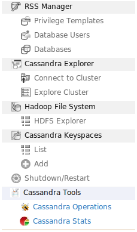Figure 1:Listed location in Carbon side menu
This contains the all the cluster level,keyspace level and column family level operations such as backup,flush,scrub,shutting down RPC and Gossip servers and etc..
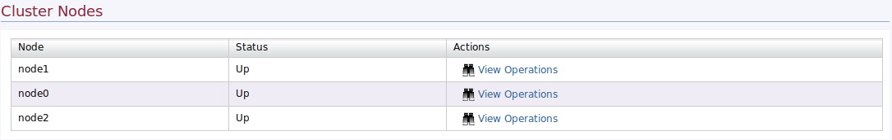Figure 2:Cassandra Tools Operation
This shows the all the stats and information available in the cluster.Cluster wide,keyspace level and column family level stats such as gossip info,column family histograms and etc.. is listed under this interfaces.

Figure 3:Cassandra Tools Stats
Under the node operations user can be perform node wide operations available in Cassandra Node Tools.
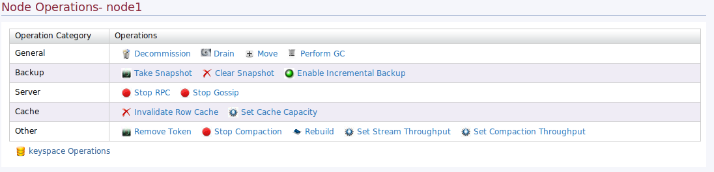Figure 4:Cassandra Tools Node Operation
Decommission node cause to remove the node from the cluster.
Move node used to change the node currant token to the new token.This is important in load balancing of the cluster.
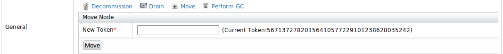Figure 5:Move node
Drain node used to flush the whole node and this cause to stop accepting write request to that node.
Activate Garbage collector of the node.
Triggers the specified node to join the ring. This assumes that the node was started with -Dcassandra.join_ring=false so that it did not join the ring upon startup.
This enable user to backup data in the node.
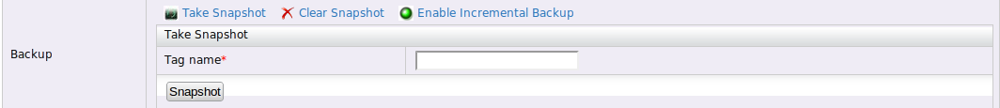Figure 6:Take snapshot
User can clear the backup if needed.
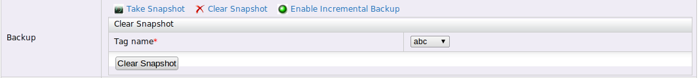Figure 7:Clear snapshot
Enable incremental backup use to backup data after when user already taken a backup.This function not fully backup all the data in the node,it used to write data to the exist backup when there are additional data comes to the backup after it taken.
User can shutdown and start the RPC server of the node.
User can shutdown and start the Gossip server of the node.
Using this operation user can remove a token in the cluster.Addition to it force remove completion operation listed under this operation while user can see the currant token removal status.
User can stop any of listed permitted compaction under this operation.
Figure 8:Stop compaction
User can specify a available data center for rebuild.
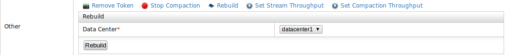Figure 9:Rebuild
User can set the compaction throughput for the node.
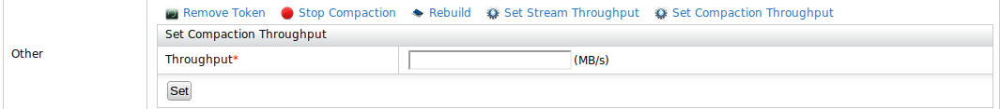Figure 10:Set compaction threshold
User can set the stream throughput of the node.
List of operations available for keyspaces are listed in this view
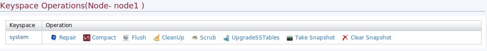Figure 11:Keyspace operations
Flushes memtables (in memory) to SSTables (on disk), which also enables CommitLog segments to be deleted.
This operation trigger major compaction in all column families in the keyspace.This operation will compact multiple SS tables into single SS table.
Scrub will rebuild sstables with correct bloom filters, with no data lost. Note that nodetool scrub will snapshot your data files before rebuilding.
This operation triggers cassandra to cleanup the keys which are not further belong to the node.
Scrub does rebuild your sstables, it will also discard data it deems broken and create a snapshot, which you have to remove manually. If you just wish to rebuild your sstables without all that jazz, then best thing is to use upgradesstables". This is useful e.g. when you are upgrading your server, or changing compression options.
Compared replica for each key responsible for the node and all replicas are updated to the newest available version.
Backup the keyspace data.
Clear the backup of a keyspace.
List of operations available for column families will be listed in view
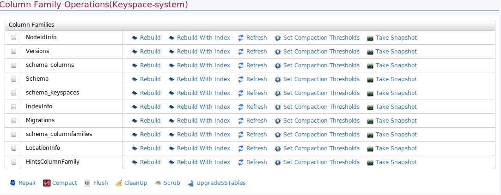Figure 12:Column family operations
Note:All above operations are same as describe in keyspace operations and user can select multiple column families to perform operations.
Backup the column family data data.
Rebuild the column family.
Rebuild column family by specifying indexes.
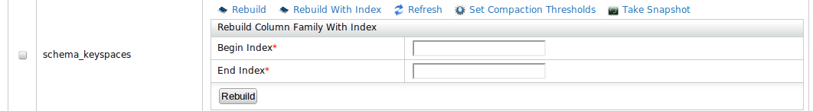Figure 13:Rebuild with indexes
Refresh column family
Set compaction thresholds for the column family.
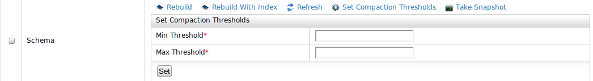Figure 14:Set compaction thresholds
This shows the stats available for node range
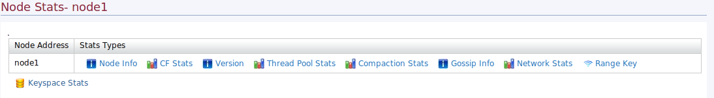Figure 15:Node stats
Outputs node information including the token, load info (on disk storage), generation number (times started), uptime in seconds, and heap memory usage.
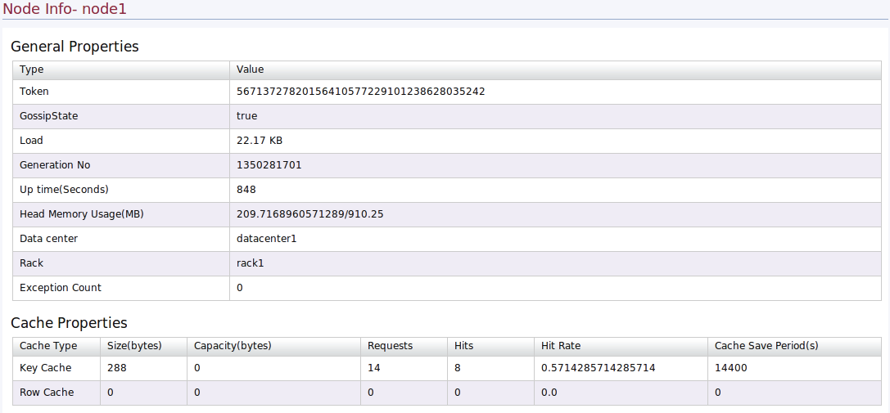Figure 16:Node info
This outputs the column family information.such as read count,write count,read latency and etc..
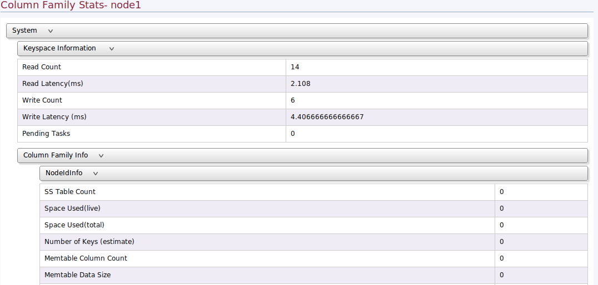Figure 17:CF stats
Outputs the cassandra version.
Outputs the thread pool stats available for the node.
Outputs the compaction stats of the node.
Outputs the gossip info of the node.
Outputs the network stats of the selected host.
Range key available for the node.
This interface listed the available for stats in keyspace range.
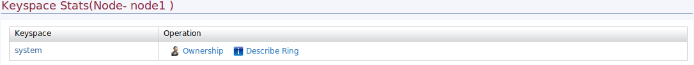Figure 18:Keyspace stats
Information about keyspace in the ring.
Load distributed in the keyspace across the cluster.
All the stats which is available in the column family level can be access through this interface.
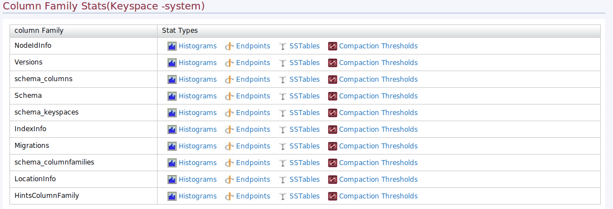Figure 19:Column family stats
Shows the column family histograms.
Shows endpoint of the column family for a given key.
Shows SSTables of the column family for a given key.
Shows the compaction thresholds for the column family.